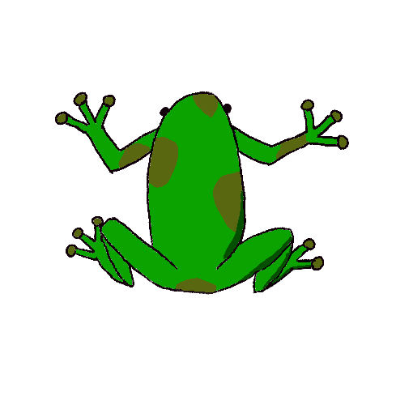
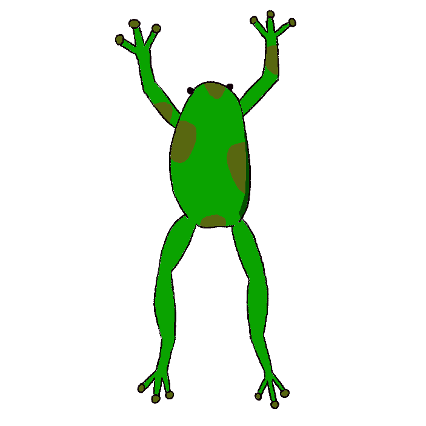

While most of the frogs we know today had humble beginnings after the extinction of dinosaurs, there is evidence as early as 200 million years ago of frog existence.
Many frogs can jump up to 20 times their body length!
Frogs in captivity live up to 20 years. The lifespan of frogs in the wild is still a mystery to experts!